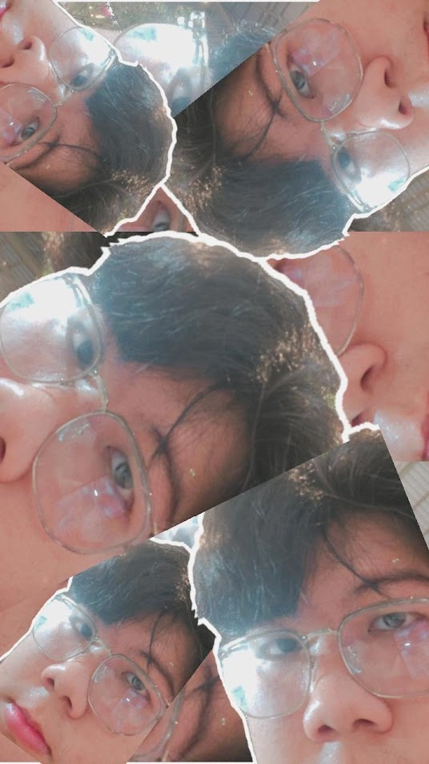

พันธกิจของเรา
ทำให้การทำงานร่วมกันเป็นเรื่องที่เข้าถึงได้
ช่วยให้นักศึกษาค้นพบเพื่อนร่วมทีมที่มีทักษะส่งเสริมกัน และทำงานร่วมกันได้อย่างมีประสิทธิภาพผ่านเครื่องมือที่ใช้งานง่ายและมีเป้าหมายชัดเจน
เราเชื่อว่าไอเดียที่ยอดเยี่ยมจะกลายเป็นจริงได้ เมื่อคนที่ใช่ร่วมมือกัน
ทำความรู้จักเรื่องราวของเรานักศึกษาทุกคนมีศักยภาพ การค้นหาคนที่ใช่เพื่อเปลี่ยนศักยภาพนั้นให้เป็นผลงาน ไม่ควรเป็นอุปสรรคที่ยากที่สุดของการทำโปรเจกต์
เราคุ้นเคยกับปัญหาการทำงานกลุ่มของนักศึกษา ไม่ว่าจะเป็นคนเก่งที่อยู่คนละห้องเรียน เวลาว่างที่ไม่ตรงกัน หรือการแบ่งหน้าที่ที่ไม่ชัดเจน บางครั้งความท้าทายที่ยิ่งใหญ่ที่สุดจึงไม่ใช่ตัวไอเดีย แต่เป็นการค้นหาทีมที่ทำงานร่วมกันได้อย่างลงตัว
นี่คือเหตุผลที่เราสร้างแนวคิด TeamUp แพลตฟอร์มที่ให้ความสำคัญกับนักศึกษา ช่วยค้นหาเพื่อนร่วมทีมจากทักษะ ความสนใจ และเวลาว่าง พร้อมพื้นที่ส่วนกลางให้ทีมวางแผนและติดตามความคืบหน้า
TeamUp Labs ตั้งเป้าทำให้การร่วมงานมีเป้าหมาย เปิดกว้าง และมีประสิทธิภาพมากขึ้น เพื่อให้นักศึกษาใช้เวลากับการจัดหาทีมน้อยลง และมีเวลาสร้างผลงานที่ภาคภูมิใจมากขึ้น
พันธกิจเป็นแนวทางในการพัฒนาสิ่งที่เราทำในวันนี้ ส่วนวิสัยทัศน์เป็นแรงนำทางสู่สิ่งที่เราอยากสร้างให้เกิดขึ้นในวันข้างหน้า
ช่วยให้นักศึกษาค้นพบเพื่อนร่วมทีมที่มีทักษะส่งเสริมกัน และทำงานร่วมกันได้อย่างมีประสิทธิภาพผ่านเครื่องมือที่ใช้งานง่ายและมีเป้าหมายชัดเจน
สร้างชุมชนแห่งการเรียนรู้ที่เชื่อมโยงถึงกัน เปิดโอกาสให้ทุกคนใช้จุดแข็งของตนเอง เติบโตไปพร้อมผู้อื่น และเปลี่ยนไอเดียร่วมกันให้เป็นผลงานที่มีคุณค่า
สมาชิก 3 คนที่มีจุดแข็งแตกต่างกัน แต่มีเป้าหมายเดียวกัน คือพัฒนาการทำงานร่วมกันของนักศึกษา โปรดเปลี่ยนข้อมูลตัวอย่างด้านล่างเป็นข้อมูลจริงของกลุ่มคุณ
 01
01เปลี่ยนไอเดียให้เป็นเว็บไซต์ที่รองรับทุกหน้าจอ โดยใส่ใจโครงสร้างที่เป็นระเบียบ การใช้งานที่เข้าถึงง่าย และรายละเอียดที่ช่วยให้ผู้ใช้เข้าใจได้ทันที

02ออกแบบเส้นทางการใช้งานและระบบภาพ โดยนำการค้นคว้า ความคิดสร้างสรรค์ และการออกแบบปฏิสัมพันธ์ที่ใส่ใจผู้ใช้มาใช้ในทุกหน้าจอ
 03
03พัฒนาการโต้ตอบที่ทำให้เว็บไซต์มีชีวิตชีวา โดยเน้นฟังก์ชันที่เป็นประโยชน์ โค้ดที่ดูแลต่อได้ง่าย และประสบการณ์ใช้งานที่ลื่นไหล
ชื่อสมาชิก ประวัติ ทักษะ รูปประจำตัว และ URL ประวัติผลงานบน GitHub Pages เป็นข้อมูลตัวอย่างที่กลุ่มสามารถแก้ไขได้
ค้นหาเพื่อนร่วมทีมและสร้างผลงานที่พร้อมแบ่งปันให้ทุกคนได้เห็น
ค้นหาทีมของคุณ